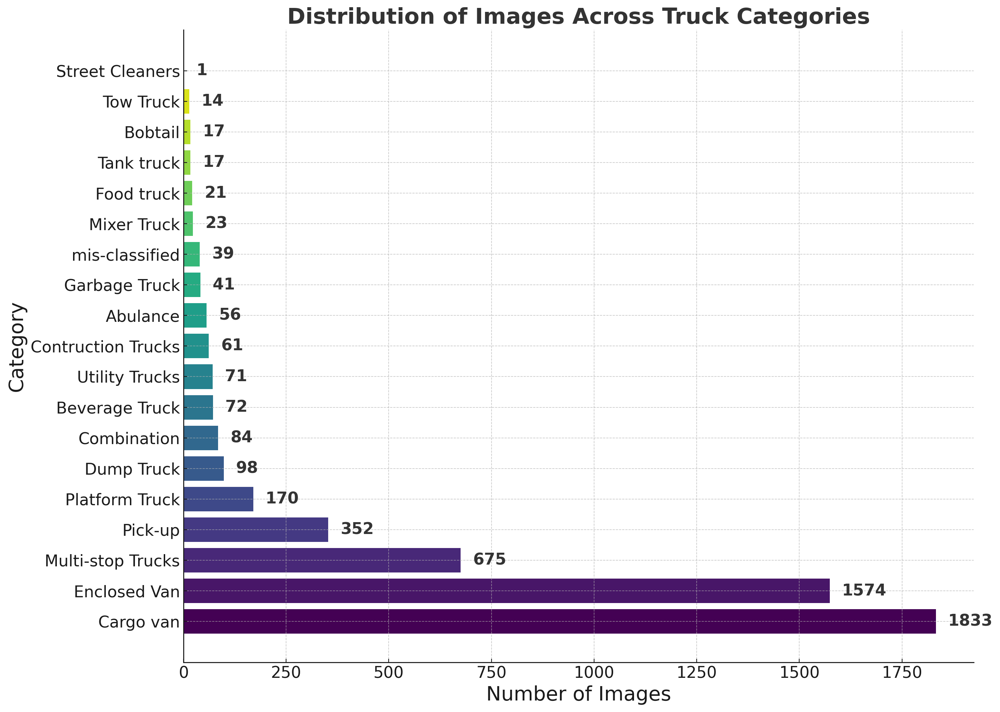
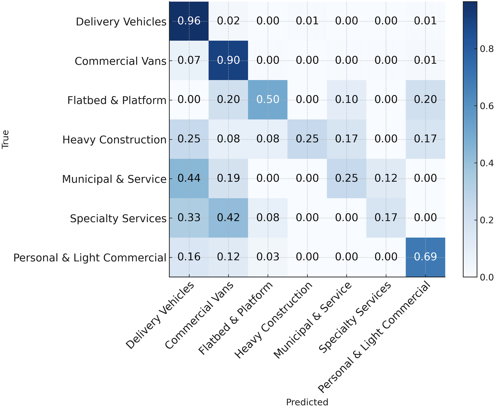
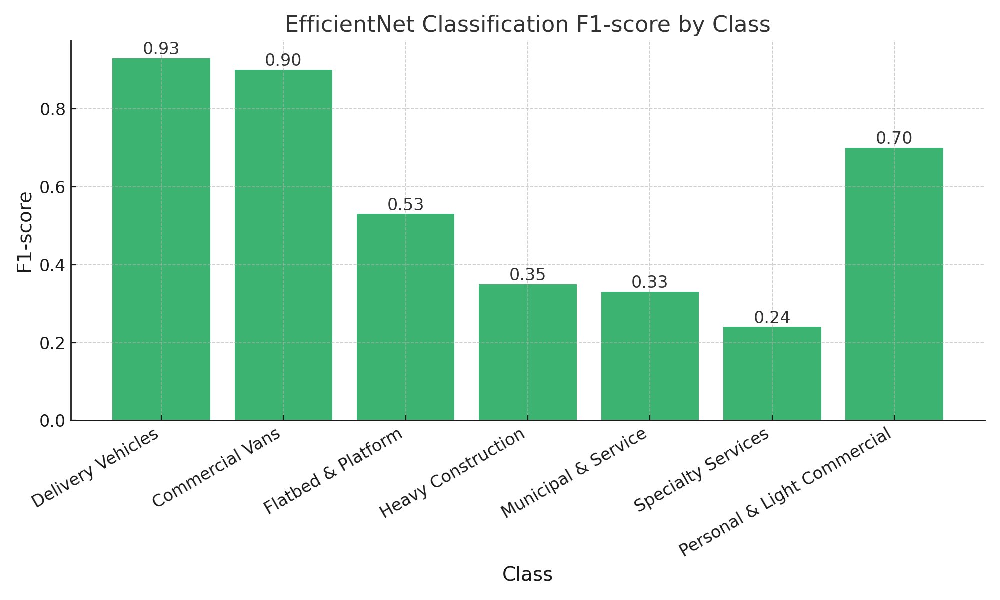
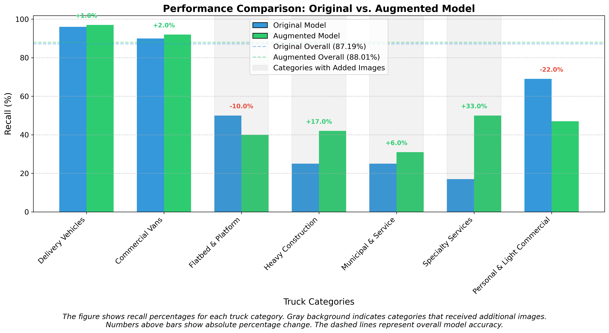
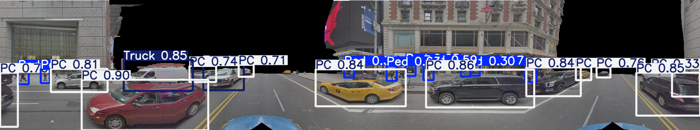
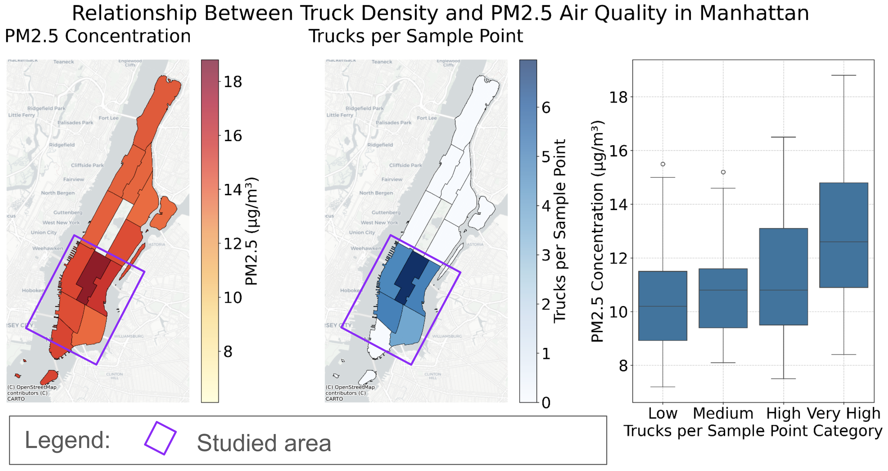

Results & Findings
Comprehensive evaluation of our urban truck characterization framework
22,589
GSV Panoramic Images
10,000
Manually Annotated Images
16%
Estimated Truck Contribution to PM2.5
50%
Specialty Services Recall Improvement

Distribution of truck categories showing substantial class imbalance in the dataset

Normalized confusion matrix showing classification performance across different truck types

F1 scores for different truck categories using EfficientNet classification

Comparison of model performance improvements through our methodology

DepthAnything integration for filtering distant objects in urban scenes

Correlation analysis between truck density and PM2.5 emissions in Manhattan
Multi-Perspective Analysis

Individual four perspectives extracted from panoramic GSV imagery

Merged four perspectives with truck detection annotations